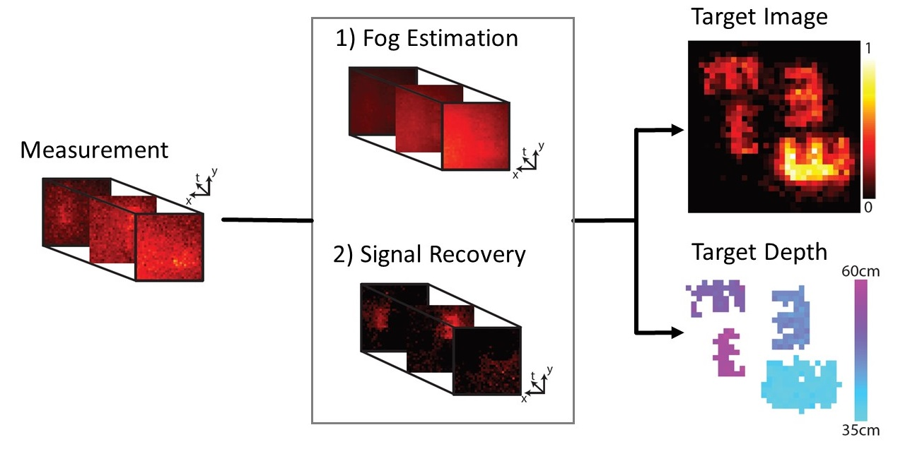
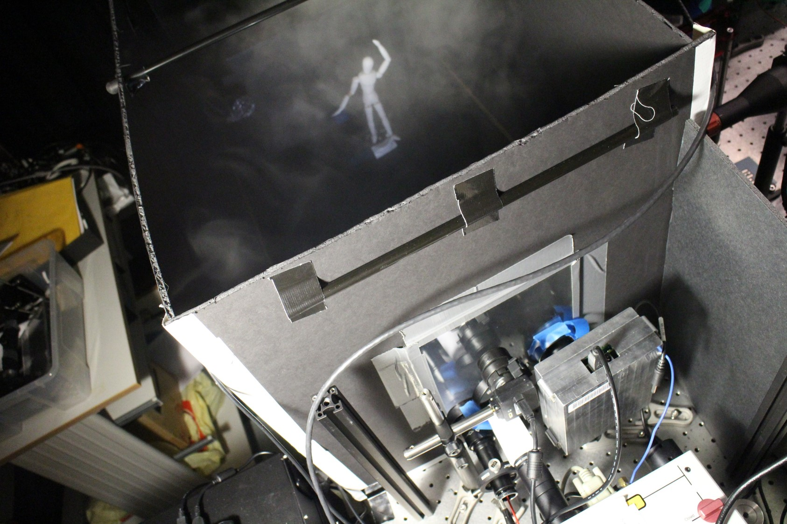

Towards Photography Through Realistic Fog
Seeing through dense fog as if it wasn't there
Guy Satat, Matthew Tancik, Ramesh Raskar
A technique to see through dense, dynamic, and heterogeneous fog conditions. The technique, based on visible light, uses hardware that is similar to LIDAR to recover the target depth and reflectance.
student prize for 2018.
 Most Influential Research 2019 award.
Most Influential Research 2019 award.
The system is based on ultrafast measurements, used to computationally remove inclement weather conditions such as fog, and produce a photo and depth map as if the fog weren’t there (with contrast improved by 6.5x in dense fog conditions). The hardware is very similar to LIDAR and is based on ultrafast sensing. The time-resolved measured photons are used to computationally subtract the fog from the measurement and recover the target reflectance and depth. Covered by MIT News.
The measurement is based on a SPAD camera (single photon avalanche diode) that time tags individual detected photons. A pulsed visible laser is used for illumination. The suggested approach is based on a probabilistic algorithm that first estimates the fog properties (background). Then the background is subtracted from the measurement with the fog leaving the signal photons from the target which are used to recover the target reflectance and depth.
The proposed model supports a wide range of fog densities and is able to work in fog that is heterogeneous and dynamic. The fog model is estimated directly from the measurement without prior knowledge. The motivation to use the background photons is similar to our All Photons Imaging work in which scattered light is measured and computationally used to robustly eliminate the scattering.
Other techniques to see through fog are usually based on longer wavelengths (like RF) and provide lower resolution and poor optical contrast, restricting the ability to identify road lanes and road signs. Another alternative method is based on time-gating that locks onto a small part of the unscattered signal, this results in poor signal-to-noise ratio and limits the applicability to moving platforms and high fog densities.

- Autonomous and augmented driving in challenging weather.
- Airplanes and helicopters take off, landing and low level flight in dense fog conditions.
- Trains traveling at normal speeds during inclement weather conditions.

- G. Satat, M. Tancik and R. Raskar, "Towards Photography Through Realistic Fog", IEEE International Conference on Computational Photography (ICCP), (2018).
- DOI: 10.1109/ICCPHOT.2018.8368463.
@inproceedings{satat2018towards, title={Towards photography through realistic fog}, author={Satat, Guy and Tancik, Matthew and Raskar, Ramesh}, booktitle={Computational Photography (ICCP), 2018 IEEE International Conference on}, pages={1--10}, year={2018}, organization={IEEE} }
- Winner AutoSens Most Influential Research 2019 award.
- Shortlist for AutoSens Most Influential Research Award.
- Cover by IEEE Signal Processing Magazine
- MIT News
- ABC WCVB
- Smithsonian Magazine
- CNBC
- Engadget
- Top 100 Science Spinoffs PDF Report
- Gizmodo
- Photonics Media
- International Business Times
- Phys.org
- Auto Evolution
- The Register
- R&D Magazine
- Inverse
A: There are several key advantages:
- Simplicity of the reconstruction algorithm allows it to run in real-time.
- The approach doesn't assume prior knowledge about the fog density, and it works with a wide range fog densities.
- The method is pixel-wise (each pixel estimates the fog properties and target independently), thus it naturally works with heterogeneous scenes and fog.
- The required hardware is similar to LIDAR that is commonly used in self-driving cars.
- Using visible light, it is possible to read road signs and detect lane markings.
A: Augmenting a human driver and enabling self-driving cars to operate in challenging weather; allowing drones to navigate and follow targets in inclement weather; improving flight safety of airplanes and helicopters during takeoffs, landings and low-level flights in extreme weather; and allowing trains to travel faster in low visibility.
Q: What do you mean by Realistic fog?
A: Our experiments are conducted with a water-based fog generator combined with a fan. This results in fog with variable densities (no fog to very dense), that is moving (dynamic) and heterogeneous (patchy).
Q: Why is visible light essential for imaging through fog (why not just RADAR)?
A: Imaging in the visible part of the electromagnetic spectrum provides good resolution (short wavelength compared to RF), and good optical contrast (different materials appear very different under visible light). The latter is key to identifying road lane markings and reading road signs.
Q: What is a SPAD camera?
A: SPAD (single photon avalanche diode) camera time tags individual photons as they are detected. Each pixel records one photon per laser pulse (our laser emits millions of pulses per second), and our method requires only a few tens of thousands photons.
Q: Is this a probabilistic framework? What does that mean?
A: We develop a probabilistic framework to model scattered photons from fog. This model is estimated from the raw measurement and is used to answer the question "what is the probability that a photon was scattered from fog or target?".
Q: How does the SPAD single photon sensitivity help?
A: The single photon sensitivity helps us in the development of a probabilistic framework. Effectively for each detected photon we ask what is the probability that this photon reflected from the fog or target. Perhaps more importantly, the SPAD measurement noise is much better (less noise) when compared to traditional cameras.
Q: How does the time-resolved sensing help?
A: We want to know what is the probability that a photon was reflected from the fog or target. A more robust way to answer that is asking given the prior knowledge that the photon was measured at a specific time, what is the probability that it was reflected from the fog or target? Intuitively, more information (time in this case) helps making better estimates. In the paper we specifically show that the probabilities to measure a photon from target and fog are different as a function of time.
Q: What is optical thickness?
A: Optical thickness is a measure to level of scattering. If we want to measure optical thickness of fog at a given time point, we measure the light intensity at that time, and compare it the light intensity without fog. With higher fog densities, and light intensity drops due to the scattering. Optical thickness is a dimensionless quantity so it's easy to compare it to different experiments. See more here.
Q: What are the main limitations of this method?
A: Because the approach is pixel wise (each pixel operates independently) it ignores spatial blur that is induced by the fog. While this effect was very minor in our measurements it is possible that it would become more apparent in other scenarios.
Another limitation is the acquisition time. While we can generate a new result with every new detected photon (100 microseconds), we rely on recently detected photons. In our setup we used a history of 2 seconds, thus this limits the immediate application for a moving platform. We hope that stronger laser and better hardware would improve this.
- G. Satat, M. Tancik, O. Gupta, B. Heshmat and R. Raskar, "Object Classification through Scattering Media with Deep Learning on Time Resolved Measurement," Optics Express Vol. 25, 17466-17479 (2017).
- G. Satat, M. Tancik and R. Raskar, "Lensless Imaging with Compressive Ultrafast Sensing", IEEE Trans. Computational Imaging, (2017).
- A. Kadambi and R. Raskar, “Rethinking Machine Vision Time of Flight With GHz Heterodyning”, IEEE Access, Vol. 5, (2017).
- G. Satat, B. Heshmat, D. Raviv and R. Raskar, “All Photons Imaging Through Volumetric Scattering”, Nature Scientific Reports, Vol. 6, 33946, (2016).
- B. Heshmat, I. H. Lee, R. Raskar, "Optical brush: Imaging through permuted probes," Nature Scientific Reports, Vol. 6, 20217, (2016).
- G. Satat, B. Heshmat, N. Naik, A. R. Sanchez and R. Raskar, "Advances in ultrafast optics and imaging applications," in SPIE 2016 (invited).
- G. Satat, B. Heshmat, C. Barsi, D. Raviv, O. Chen, M.G. Bawendi and R. Raskar, “Locating and Classifying Fluorescent Tags Behind Turbid Layers Non-Invasively Using Sparsity-Based Time-Resolved Inversion,” Nature Communications, Vol. 6, 6796 (2015).
- G. Gariepy, et al., "Single-photon sensitive light-in-fight imaging," Nature Communications, Vol. 6, 6021 (2015).
- B. Heshmat, G. Satat, C. Barsi, and R. Raskar, "Single-Shot Ultrafast Imaging Using Parallax-Free Alignment with a Tilted Lenslet Array," in CLEO: 2014 (oral).
- A. Velten, et al., "Recovering three-dimensional shape around a corner using ultrafast time-of-flight imaging," Nature communications, Vol. 3, 745 (2012).
- A. Velten, et al., "Slow art with a trillion frames per second camera," ACM SIGGRAPH 2011 Talks ACM, (2011).
- R. Raskar, and D. James, "5d time-light transport matrix: What can we reason about scene properties," Int. Memo 7 (2008).